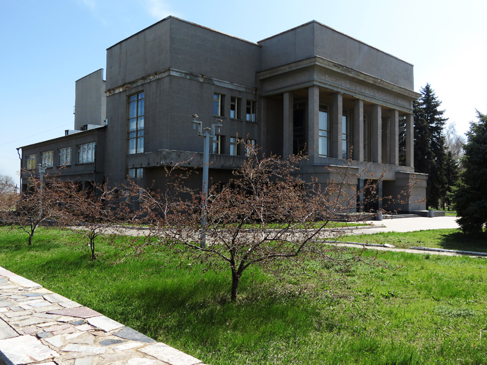

Культурное наследие
Иловайск богат своей культурой, которая формировалась на протяжении столетий. В городе сохранились традиции и обычаи, передающиеся из поколения в поколение. Основу культуры составляют музыкальные, танцевальные и ремесленные направления, которые активно развиваются в местных домах культуры и школах искусств.
Музеи и памятники
В Иловайске расположен краеведческий музей, в котором представлены экспонаты, рассказывающие об истории, быте и культуре города. Среди памятников города выделяется монумент в честь железнодорожников, сыгравших ключевую роль в развитии Иловайска.
Фестивали и праздники
Ежегодно в Иловайске проводятся различные фестивали и праздники. Среди них особенно популярны День города и фестиваль народной музыки. Эти мероприятия объединяют жителей и гостей города, создавая атмосферу единства и радости.
Современные инициативы
Сегодня в Иловайске активно развиваются новые культурные проекты. Молодёжь города занимается созданием театральных постановок, проведением выставок и креативных мастер-классов. Это способствует сохранению культурного наследия и его адаптации к современным реалиям.